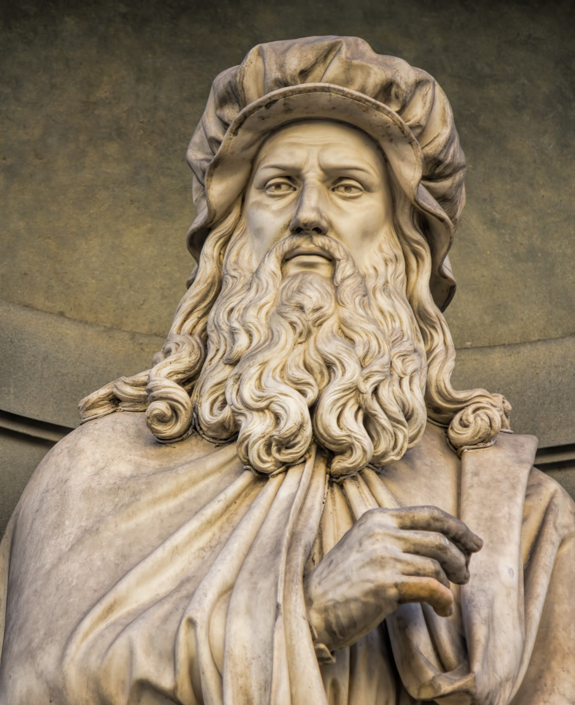

Ideas
Pensamiento o filosofía
 Leonardo da Vinci fue un defensor del humanismo y la razón. Su enfoque filosófico se centraba en la importancia de la experiencia y la observación para comprender el mundo. Dos conceptos clave en su pensamiento fueron la necesidad y la proporción. La necesidad se refería a cómo los elementos del universo se ajustan a su función natural, mientras que la proporción se reflejaba en obras como El Hombre de Vitruvio, que combinaba matemáticas y arte.
Ciencia
Contribuciones o Logros
◉ Contribuciones Artísticas: Leonardo es famoso por obras maestras como La Mona Lisa y La última cena.
Innovó en técnicas como el sfumato y la perspectiva atmosférica, sentando las bases para el arte moderno.
◉ Avances en Anatomía Humana: Realizó más de 30 disecciones de cuerpos humanos, produciendo dibujos anatómicos
precisos que contribuyeron significativamente a la medicina moderna.
◉ Innovaciones en Ingeniería y Mecánica: Diseñó máquinas voladoras, submarinos y vehículos blindados, anticipándose
a la ingeniería moderna.
◉ Estudios en Óptica y Hidrodinámica: Leonardo investigó sobre la luz y el agua, desarrollando teorías sobre la
óptica y la hidrodinámica que influyeron en la ciencia posterior.
◉ Integración de Arte y Ciencia: Su capacidad para combinar arte y ciencia lo convirtió en un modelo del homo
universalis del Renacimiento.
Mas...
Manuscritos y Cuadernos
 Los manuscritos y cuadernos de Leonardo da Vinci, como el Códice Atlántico, contienen una riqueza de ideas
visionarias que no se publicaron hasta siglos después, convirtiéndolo en un precursor de la ciencia moderna.
Estos cuadernos, iniciados a mediados de la década de 1480, son una enciclopedia personal que refleja su
insaciable curiosidad y capacidad para combinar arte y ciencia. En ellos, Da Vinci anotó detalladas observaciones
sobre anatomía humana, ingeniería hidráulica, geometría, y diseños de máquinas voladoras y submarinos. Además,
su escritura en espejo, que se lee de derecha a izquierda, ha sido objeto de fascinación y debate.
Los manuscritos y cuadernos de Leonardo da Vinci, como el Códice Atlántico, contienen una riqueza de ideas
visionarias que no se publicaron hasta siglos después, convirtiéndolo en un precursor de la ciencia moderna.
Estos cuadernos, iniciados a mediados de la década de 1480, son una enciclopedia personal que refleja su
insaciable curiosidad y capacidad para combinar arte y ciencia. En ellos, Da Vinci anotó detalladas observaciones
sobre anatomía humana, ingeniería hidráulica, geometría, y diseños de máquinas voladoras y submarinos. Además,
su escritura en espejo, que se lee de derecha a izquierda, ha sido objeto de fascinación y debate.